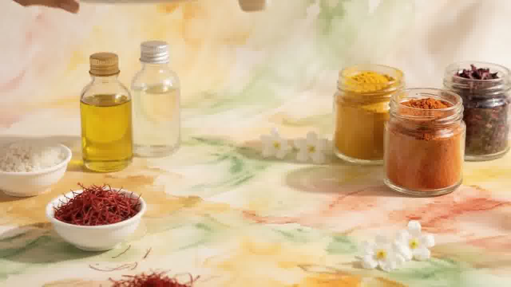
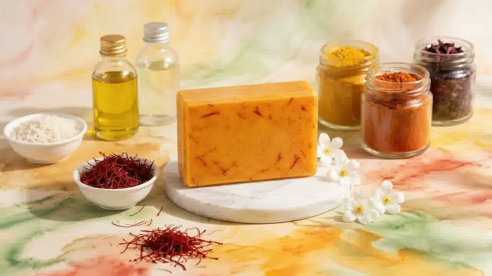
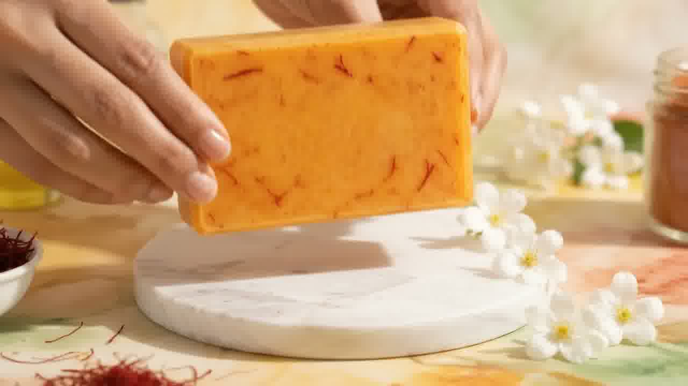
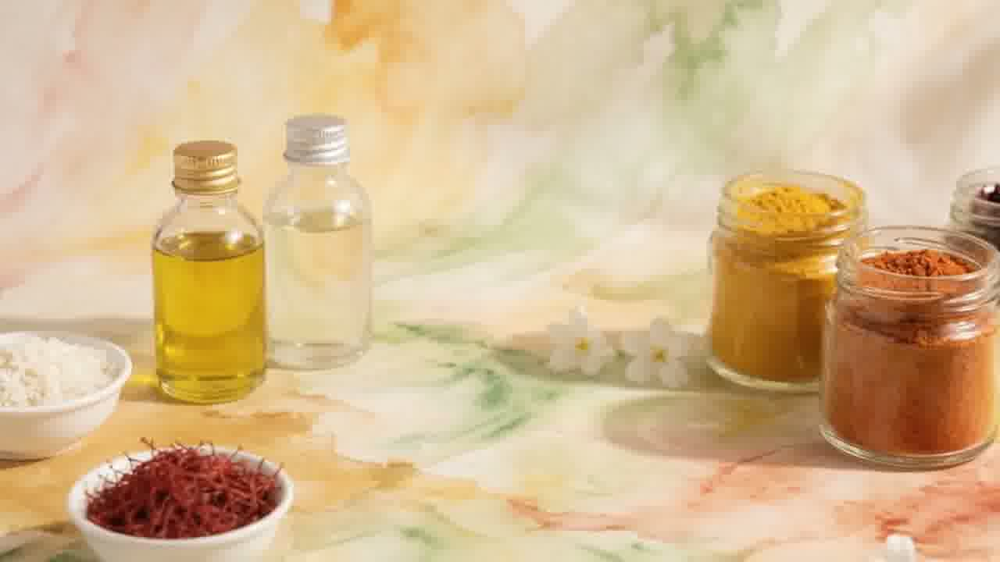
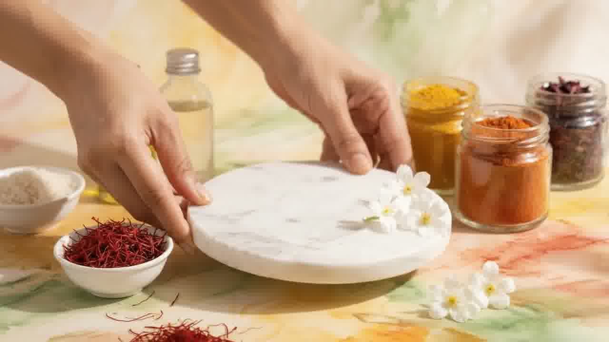
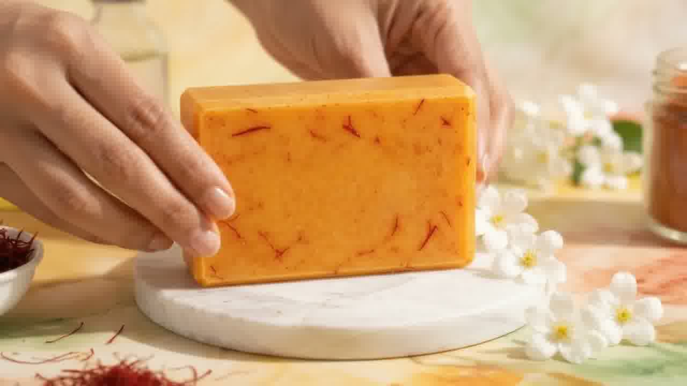
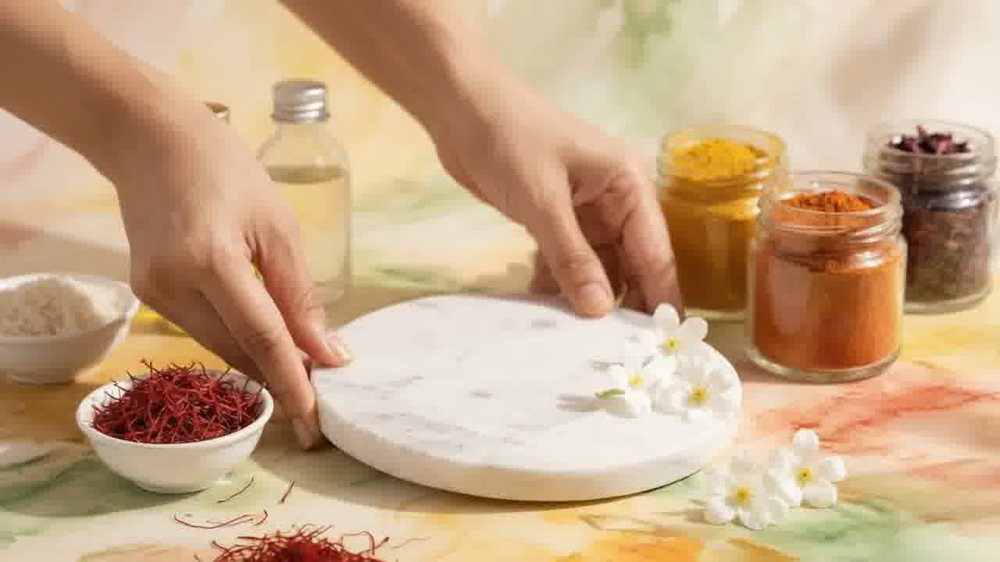

Saffron
Treasured threads, traditionally valued for their rich golden character and warm natural hue.
Why it's hereSelected for the formulation to give each bar its signature saffron-golden character.
Handcrafted Botanical Soap
Handcrafted with carefully selected botanical ingredients for a beautifully simple cleansing ritual.
Handcrafted•Small Batch•Botanical Inspired


Our Philosophy
Each bar is thoughtfully crafted in small batches, allowing the natural character of the ingredients and the handcrafted process to shine through.
We believe everyday care should feel unhurried. From the first pour to the final wrap, every step is done with intention — so what reaches your hands is honest, warm and quietly beautiful.
Explore Our CraftInside Every Bar
A short, honest list — selected for the formulation and nothing more.

Treasured threads, traditionally valued for their rich golden character and warm natural hue.
Why it's hereSelected for the formulation to give each bar its signature saffron-golden character.

Golden oils pressed from plants, chosen for their natural character and gentle cleansing base.
Why it's hereThey form the heart of the bar — the foundation of every handcrafted batch.
Finely milled botanicals and plant-based ingredients, each chosen for its natural character.
Why it's hereIncluded to bring subtle colour, texture and botanical depth to the formulation.
Gentle, plant-derived components that complete the bar — nothing unnecessary added.
Why it's hereChosen to keep the formula simple, honest and kind to everyday routines.
The Handmade Difference
Mass-produced bars are made by machines at speed. Ours are made by hands, in small batches, with time to spare.
Made in limited batches so every bar receives proper attention from start to finish.
A short, considered list — each ingredient selected for the formulation with care.
Slight variations in tone and texture are the natural signature of something made by hand.
From blending to wrapping, each stage is checked and finished with intention.
"The small imperfections are the point — proof of the hand behind the bar."
Our Craft
Oils, botanicals and saffron are chosen and measured with care.
Ingredients are gently combined into a smooth, even mixture.
Each batch is poured and shaped by hand — never rushed.

Bars are left to set properly, then finished and inspected one by one.
Wrapped with care and sent off to become part of your ritual.
What It Offers
A soft, simple lather for daily hand and body care.
Built around plant-based ingredients and saffron's natural character.
Made in limited runs, never mass-produced.
Warm saffron-golden tones with visible botanical texture in every bar.
A short, honest list — each element chosen with purpose.
Finished, checked and wrapped to a standard we're proud of.
The Soap
A warm, saffron-golden bar handcrafted in small batches with carefully selected botanical ingredients — a beautifully simple addition to your everyday ritual.

The Ritual
Wet the soap and your skin with warm water.
Work the bar between your hands to create a gentle lather.
Massage onto skin and rinse thoroughly.
Care tip: Allow the soap to dry between uses and store it on a draining soap dish.
Kind Words
Sample reviews shown for design preview — to be replaced with verified customer feedback.
"The bar feels lovely in the hand and the colour is beautiful. It has become a small moment of calm in my morning routine."
"You can tell it's handmade — the texture, the scent, the wrapping. Bought one as a gift and kept one for myself."
"Gentle, simple and beautifully made. I keep mine on a wooden dish by the sink and it makes the whole bathroom feel warmer."
"A thoughtful little luxury. The saffron threads visible in the bar make it feel genuinely crafted, not factory-made."
Everyday Ritual
A quiet morning. Warm water. The warm glow of saffron-gold on a marble dish. Small details that turn a daily habit into a moment worth keeping.
Place the bar beside a ceramic sink, let it rest on natural stone, and let the ritual take care of itself.

Our Promise
Every batch is poured, set and finished by hand, with time to do it properly.
A short, honest ingredient list — clearly shared, nothing hidden.
Limited batches let us focus on consistency, care and finish.
Wrapped simply and carefully, with minimal, thoughtful materials.
Good to Know
Everything you might want to know before the bar reaches your hands. Still curious? We're happy to help.
Each bar is made with natural oils, saffron and carefully selected plant-based botanical ingredients. The full list is printed on the packaging.
The bar is formulated for gentle everyday cleansing. If you have specific skin concerns or sensitivities, we recommend checking the ingredient list or doing a small patch test first.
Keep it on a draining soap dish and let it dry between uses. Avoid leaving it in direct streams of water.
With proper dry storage between uses, a single bar typically lasts several weeks of daily use. Handmade bars appreciate good drainage.
Yes — every bar is handcrafted in small batches, which is why each one carries its own subtle character.
Bars are wrapped carefully in minimal, thoughtful packaging designed to protect the soap and reduce waste.
We currently deliver across Bangladesh. Delivery times and charges are confirmed at checkout.
If your order arrives damaged or there's an issue with your bar, contact our support team and we'll arrange a replacement or refund.
Your Ritual Awaits
Discover the simple pleasure of thoughtfully handcrafted soap.